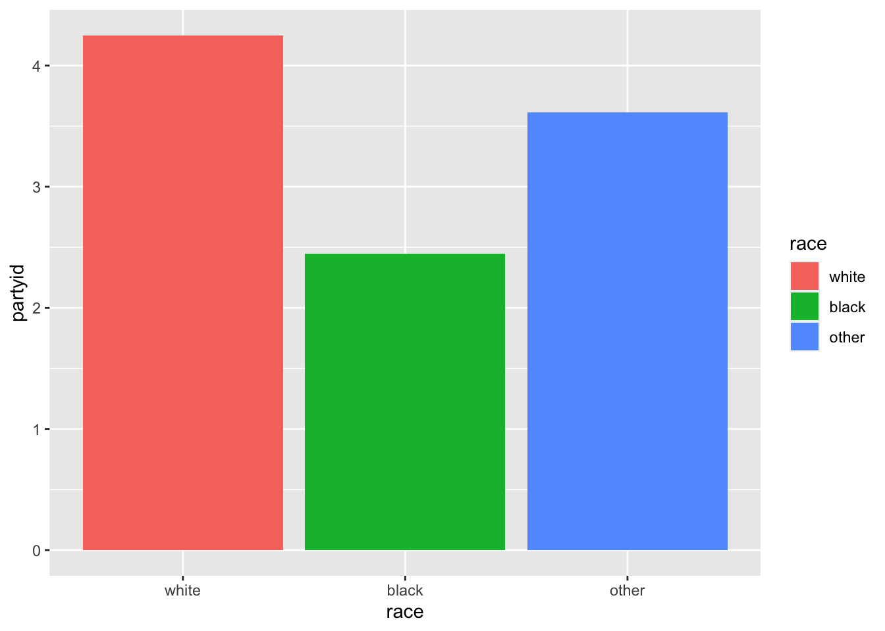
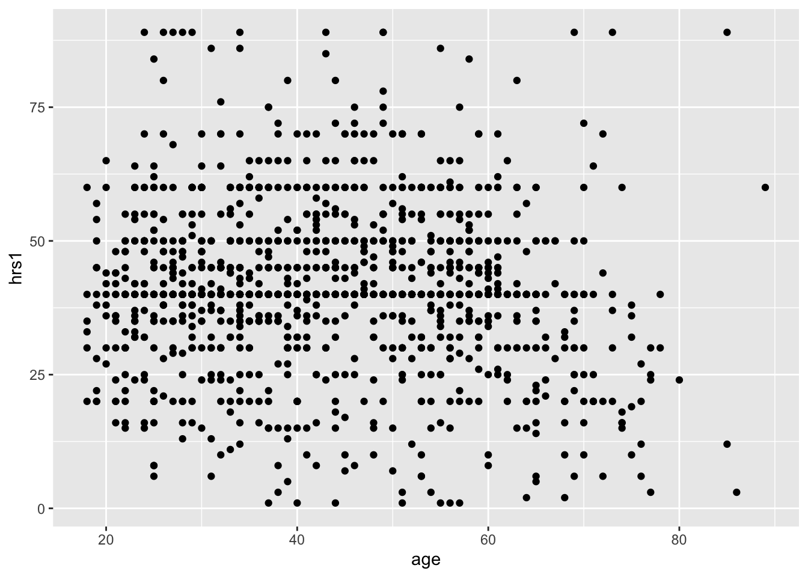
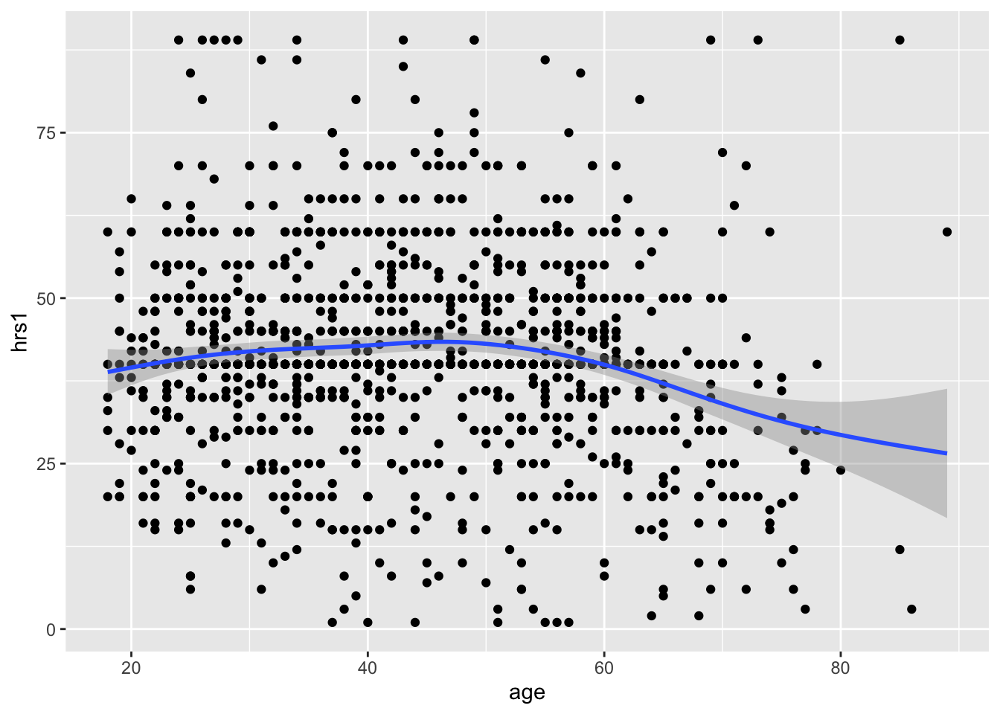
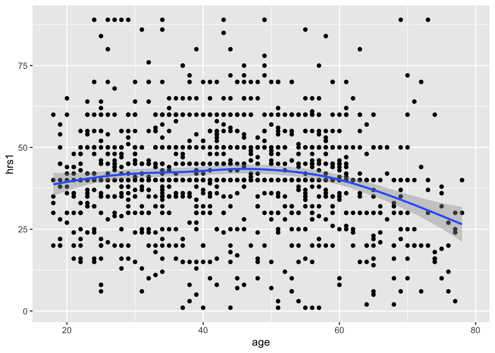
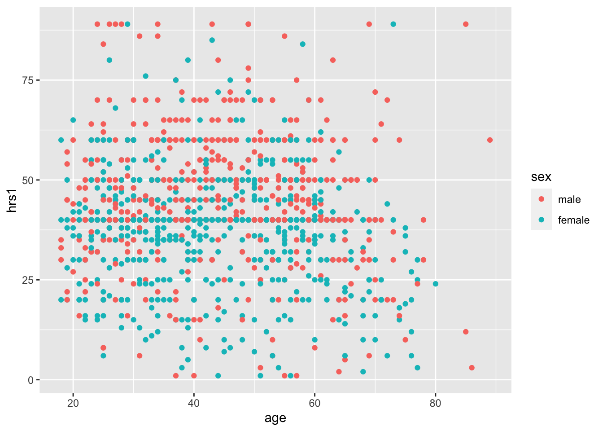

5 Exploring and Visualizing Data
Now, let’s actually get our hands dirty and start analyzing data. The first thing we will need to do is to pick a data set to analyze. A good candidate is the General Social Survey (GSS) - a large-scale survey that sociologists have been administering since the 1960s, meant to gauge the changing social attitudes and practices of Americans over time. It is probably sociology’s most celebrated dataset, the subject of tens of thousands of papers since its inception. It isn’t quite big data (only a couple thousand respondets each year), but it is a good starting point for our first data exercises.
To download the GSS, first navigate to: https://gss.norc.org/get-the-data/stata
Then, click where it says 2018, under the heading Download Individual Year Data Sets (cross-section only).
For now, drag the downloaded file to your Desktop. It is a STATA file, so we will have to use a special R package, foreign, to load it into R as well as the function, read.dta, from that package.
A function is basically a command which helps you do something. Later on, we will work on writing our own functions, for now we will us the functions that other people’s packages supply for us.
# load in the foreign package.. it comes with R
library(foreign)
# now we can load in the GSS data
gss <- read.dta("Data/GSS2018.dta")You can use the View() or head() functions to actually view the data and see what it looks like.
## abany abdefect abfelegl abhelp1 abhelp2 abhelp3 abhelp4 abhlth
## 1 no yes <NA> yes yes yes yes yes
## 2 yes yes it depends no no no no yes
## 3 <NA> <NA> <NA> yes no yes yes <NA>
## 4 <NA> <NA> should yes yes yes yes <NA>
## 5 no yes <NA> no no no yes yes
## 6 yes yes should yes yes yes yes yes
## abinspay abmedgov1
## 1 people should be able the government should decide
## 2 people should not be able <NA>
## 3 people should not be able a woman and her medical professional should decide
## 4 people should be able <NA>
## 5 people should not be able <NA>
## 6 people should be able <NA>If you have ever worked with Excel before, this should look pretty familiar! In R, this is called a data.frame(). It is the most common way we will use to organize data.
class(gss)## [1] "data.frame"A data.frame is organized into rows and columns. Each row holds the data for a single respondent, whereas each column holds the data for a single variable (or question). Let’s see how many people (rows) and variables (columns) the data have.
# Check the number of rows
nrow(gss)## [1] 2348# Check the number of columns
ncol(gss)## [1] 1064# Or both at the same time!
dim(gss)## [1] 2348 1064We can find this information over in the environment too.
The rows are numbered, while the columns have names. But if you look at the column names, they won’t make much sense.
# check the column names
colnames(gss)## [1] "abany" "abdefect" "abfelegl" "abhelp1"
## [5] "abhelp2" "abhelp3" "abhelp4" "abhlth"
## [9] "abinspay" "abmedgov1" "abmedgov2" "abmelegl"
## [13] "abmoral" "abnomore" "abpoor" "abpoorw"
## [17] "abrape" "absingle" "abstate1" "abstate2"
## [21] "acqntsex" "actssoc" "adults" "advfront"
## [25] "affrmact" "afraidof" "afterlif" "age"
## [29] "aged" "agekdbrn" "ancestrs" "arthrtis"
## [33] "astrolgy" "astrosci" "atheists" "attend"
## [37] "attend12" "attendma" "attendpa" "away1"
## [41] "away11" "away2" "away3" "away4"
## [45] "away5" "away6" "away7" "babies"
## [49] "backpain" "ballot" "balneg" "balpos"
## [53] "befair" "betrlang" "bible" "bigbang"
## [57] "bigbang1" "bigbang2" "bird" "birdb4"
## [61] "born" "boyorgrl" "breakdwn" "buddhsts"
## [65] "buyesop" "buyvalue" "cantrust" "cappun"
## [69] "cat" "catb4" "charactr" "chemgen"
## [73] "childs" "chldidel" "christns" "churhpow"
## [77] "class" "clergvte" "closeto1" "closeto2"
## [81] "closeto3" "closeto4" "closeto5" "cntctfam"
## [85] "cntctfrd" "cntctkid" "cntctpar" "cntctsib"
## [89] "codeg" "coden" "coeduc" "coevwork"
## [93] "cofund" "cohort" "cohrs1" "cohrs2"
## [97] "coind10" "coisco08" "cojew" "colath"
## [101] "colcom" "coldeg1" "colhomo" "colmil"
## [105] "colmslm" "colrac" "colsci" "colscinm"
## [109] "comfort" "company" "compperf" "comprend"
## [113] "compuse" "compwage" "conarmy" "conbiz"
## [117] "conbus" "conchurh" "conclerg" "concong"
## [121] "concourt" "condemnd" "condom" "condrift"
## [125] "coneduc" "conf2f" "confed" "confinan"
## [129] "coninc" "conjudge" "conlabor" "conlegis"
## [133] "conmedic" "conpress" "conrinc" "conschls"
## [137] "consci" "consent" "contv" "conwkday"
## [141] "coocc10" "coop" "coother" "copres10"
## [145] "copres105plus" "corel" "cosei10" "cosei10educ"
## [149] "cosei10inc" "courts" "cowrkhlp" "cowrkint"
## [153] "cowrkslf" "cowrksta" "crack30" "dangoth1"
## [157] "dangoth2" "dangoth3" "dangoth4" "dangoth5"
## [161] "dangroth" "dangrslf" "dangslf1" "dangslf2"
## [165] "dangslf3" "dangslf4" "dangslf5" "dateintv"
## [169] "decmoney" "dectreat" "defpensn" "degree"
## [173] "demands" "denkid" "denom" "denom16"
## [177] "depress" "deptperf" "diabetes" "diagnosd"
## [181] "difrel" "dinefrds" "dipged" "discaff"
## [185] "discaffm" "discaffw" "disrspct" "divlaw"
## [189] "divorce" "dofirst" "dog" "dogb4"
## [193] "dwelling" "dwellpre" "dwelown" "dwelown16"
## [197] "earnrs" "earthsun" "educ" "egomeans"
## [201] "electron" "emailhr" "emailmin" "emoprobs"
## [205] "empinput" "emptrain" "endsmeet" "eqwlth"
## [209] "esop" "esopnot" "eth1" "eth2"
## [213] "eth3" "ethnic" "ethnum" "evcrack"
## [217] "evidu" "evolved" "evolved2" "evpaidsx"
## [221] "evstray" "evwork" "expdesgn" "exptext"
## [225] "extr2017" "extrapay" "extraval" "extrayr"
## [229] "fair" "fairearn" "famdif16" "famgen"
## [233] "family16" "fammhneg" "fampress" "famvswk"
## [237] "famwkoff" "fatalism" "fatigue" "fear"
## [241] "fechld" "feelevel" "feelrel" "feeused"
## [245] "fefam" "fehire" "fejobaff" "fepol"
## [249] "fepresch" "finalter" "finrela" "firstyou"
## [253] "fish" "fishb4" "form" "formwt"
## [257] "fringeok" "frndsex" "fucitzn" "fund"
## [261] "fund16" "gender1" "gender10" "gender11"
## [265] "gender12" "gender2" "gender3" "gender4"
## [269] "gender5" "gender6" "gender7" "gender8"
## [273] "gender9" "geneabrt2" "genegen" "genegoo2"
## [277] "geneself2" "genetics" "genetst1" "getahead"
## [281] "goat" "goatb4" "god" "godchnge"
## [285] "godmeans" "godswill" "goodlife" "goveqinc"
## [289] "govlazy" "govvsrel" "granborn" "grass"
## [293] "gunlaw" "handmove" "hapcohab" "hapmar"
## [297] "happy" "hapunhap" "haveinfo" "health"
## [301] "health1" "healthissp" "heaven" "hefinfo"
## [305] "height" "hell" "helpblk" "helpfrds"
## [309] "helpful" "helpnot" "helpoth" "helppoor"
## [313] "helpsick" "hhrace" "hhtype" "hhtype1"
## [317] "hindus" "hispanic" "hivtest" "hivtest1"
## [321] "hivtest2" "hlpadvce" "hlpdown" "hlpequip"
## [325] "hlphome" "hlpjob" "hlploan" "hlppaper"
## [329] "hlpresde" "hlpsick" "hlpsickr" "hlpsococ"
## [333] "hlthdays" "hlthmntl" "hlthphys" "hlthstrt"
## [337] "homosex" "homosex1" "hompop" "horse"
## [341] "horseb4" "hotcore" "hrs1" "hrs2"
## [345] "hrsrelax" "hsbio" "hschem" "hsmath"
## [349] "hsphys" "huadd" "huaddwhy" "hubbywrk"
## [353] "huclean" "hunt" "hunt1" "hurtatwk"
## [357] "hurtoth" "hurtself" "hvylift" "hyperten"
## [361] "id" "idu30" "if12who" "if16who"
## [365] "imbalnce" "imprvown" "imprvtrt" "incgap"
## [369] "incom16" "income" "income16" "incuspop"
## [373] "indperf" "indus10" "indusgen" "intage"
## [377] "intcntct" "intecon" "inteduc" "intenvir"
## [381] "intethn" "intfarm" "inthisp" "intid"
## [385] "intintl" "intlblks" "intlhsps" "intlwhts"
## [389] "intmed" "intmil" "intrace1" "intrace2"
## [393] "intrace3" "intsci" "intsex" "intspace"
## [397] "inttech" "intyrs" "isco08" "isco88"
## [401] "issp" "jew" "jew16" "jews"
## [405] "jobfind" "jobfind1" "joblose" "jobsecok"
## [409] "kidpars" "kidsinhh" "kidssol" "knowschd"
## [413] "knowwhat" "knwbus" "knwclenr" "knwcop"
## [417] "knwcuttr" "knwexec" "knwhrman" "knwlawyr"
## [421] "knwmchnc" "knwmw1" "knwmw2" "knwmw3"
## [425] "knwmw4" "knwmw5" "knwnurse" "knwtcher"
## [429] "laidoff" "lasers" "learnnew" "letdie1"
## [433] "letin1a" "libath" "libcom" "libhomo"
## [437] "libmil" "libmslm" "librac" "life"
## [441] "lifein5" "lifenow" "liveblks" "lngthinv"
## [445] "localnum" "lonely1" "lonely2" "lonely3"
## [449] "madeg" "madenkid" "maeduc" "maind10"
## [453] "maisco08" "maisco88" "major1" "major2"
## [457] "majorcol" "makefrnd" "maleornt" "manvsemp"
## [461] "maocc10" "mapres10" "mapres105plus" "mar1"
## [465] "mar11" "mar12" "mar2" "mar3"
## [469] "mar4" "mar5" "mar6" "mar7"
## [473] "mar8" "mar9" "marasian" "marblk"
## [477] "marcohab" "marelkid" "marhisp" "marhomo"
## [481] "marital" "martype" "marwht" "masei10"
## [485] "masei10educ" "masei10inc" "matesex" "mawrkgrw"
## [489] "mawrkslf" "mcsds1" "mcsds2" "mcsds3"
## [493] "mcsds4" "mcsds5" "mcsds6" "mcsds7"
## [497] "meddoc" "mentldoc" "mentlhos" "mentlill"
## [501] "mentloth" "meovrwrk" "mhdiagno" "mhp1r1"
## [505] "mhp1r2" "mhp2r1" "mhp2r2" "mhp3r1"
## [509] "mhp3r2" "mhp4r1" "mhp4r2" "mhp5r1"
## [513] "mhp5r2" "mhtreat1" "mhtreat2" "mhtreat3"
## [517] "mhtreat4" "mhtreat5" "mhtreatd" "mhunsure"
## [521] "miracles" "misswork" "mnthsusa" "mntlhlth"
## [525] "mobile16" "mode" "moredays" "muslims"
## [529] "mustdoc" "musthosp" "mustmed" "mustwork"
## [533] "mygoals" "myprobs1" "myprobs2" "myprobs3"
## [537] "myprobs4" "myprobs5" "myskills" "mywaygod"
## [541] "nanoben" "nanoharm" "nanowill" "nataccess"
## [545] "natactive" "nataid" "nataidy" "natarms"
## [549] "natarmsy" "natchld" "natcity" "natcityy"
## [553] "natcrime" "natcrimy" "natdrug" "natdrugy"
## [557] "nateduc" "nateducy" "natenrgy" "natenvir"
## [561] "natenviy" "natfare" "natfarey" "natheal"
## [565] "nathealy" "natlack" "natmass" "natmeet"
## [569] "natnotice" "natpark" "natrace" "natracey"
## [573] "natrelax" "natroad" "natsat" "natsci"
## [577] "natsoc" "natspac" "natspacy" "nattime"
## [581] "nattimeok" "natviews" "neisafe" "newfrds"
## [585] "news" "newsfrom" "nextgen" "nihilism"
## [589] "notsmart" "ntwkhard" "nukegen" "numcong"
## [593] "numemps" "numlangs" "nummen" "numorg"
## [597] "numpets" "numwomen" "obey" "occ10"
## [601] "odds1" "odds2" "old1" "old10"
## [605] "old11" "old12" "old2" "old3"
## [609] "old4" "old5" "old6" "old7"
## [613] "old8" "old9" "opdevel" "otcmed"
## [617] "oth16" "other" "othersex" "othlang"
## [621] "othlang1" "othlang2" "othmhneg" "othpet"
## [625] "othpetb4" "oversamp" "overwork" "owngun"
## [629] "ownstock" "padeg" "padenkid" "paeduc"
## [633] "paidsex" "painarms" "paind10" "paisco08"
## [637] "paisco88" "paocc10" "papres10" "papres105plus"
## [641] "parborn" "parelkid" "parsol" "partfull"
## [645] "partlsc" "partners" "partnrs5" "partpart"
## [649] "partteam" "partvol" "partyid" "pasei10"
## [653] "pasei10educ" "pasei10inc" "pawrkslf" "petb4"
## [657] "petb4cmfrt" "petb4fam" "petb4ply" "petcmfrt"
## [661] "petfam" "petplay" "phase" "phone"
## [665] "phyeffrt" "physacts" "physhlth" "physill"
## [669] "pig" "pigb4" "pikupsex" "pilingup"
## [673] "pillok" "pistol" "polabuse" "polattak"
## [677] "poleff11" "polescap" "polhitok" "polmurdr"
## [681] "polviews" "poorserv" "popespks" "popular"
## [685] "pornlaw" "posslq" "posslqy" "postlife"
## [689] "pray" "prayer" "prayfreq" "premarsx"
## [693] "pres12" "pres16" "prestg10" "prestg105plus"
## [697] "preteen" "prodctiv" "promtefr" "promteok"
## [701] "proudemp" "prvdhlth" "prvdold" "quallife"
## [705] "racdif1" "racdif2" "racdif3" "racdif4"
## [709] "race" "racecen1" "racecen2" "racecen3"
## [713] "raclive" "racopen" "racwork" "radioact"
## [717] "random" "rank" "ratepain" "ratetone"
## [721] "realinc" "realrinc" "reborn" "reg16"
## [725] "region" "relactiv" "relate1" "relate10"
## [729] "relate11" "relate12" "relate2" "relate3"
## [733] "relate4" "relate5" "relate6" "relate7"
## [737] "relate8" "relate9" "relatsex" "relext1"
## [741] "relext3" "relgenbar" "relgeneq" "relhh1"
## [745] "relhh10" "relhh11" "relhh12" "relhh2"
## [749] "relhh3" "relhh4" "relhh5" "relhh6"
## [753] "relhh7" "relhh8" "relhh9" "relhhd1"
## [757] "relhhd10" "relhhd11" "relhhd12" "relhhd2"
## [761] "relhhd3" "relhhd4" "relhhd5" "relhhd6"
## [765] "relhhd7" "relhhd8" "relhhd9" "relig"
## [769] "relig16" "religcon" "religint" "religkid"
## [773] "reliten" "relmarry" "relobjct" "relpast"
## [777] "relpersn" "relrlvnt" "relscrpt" "relsp1"
## [781] "relsp10" "relsp11" "relsp12" "relsp2"
## [785] "relsp3" "relsp4" "relsp5" "relsp6"
## [789] "relsp7" "relsp8" "relsp9" "relsprt"
## [793] "reptile" "reptileb4" "res16" "respect"
## [797] "respnum" "respond" "rfamlook" "rgroomed"
## [801] "rhlthend" "richwork" "rifle" "rincblls"
## [805] "rincom16" "rincome" "rlooks" "rowngun"
## [809] "rplace" "rvisitor" "rweight" "rxmed"
## [813] "safefrst" "safehlth" "safetywk" "sampcode"
## [817] "sample" "satfam7" "satfin" "satjob"
## [821] "satjob1" "satlife" "satsoc" "savesoul"
## [825] "scibnfts" "scientbe" "scientgo" "scienthe"
## [829] "scientod" "scifrom" "scinews1" "scinews2"
## [833] "scinews3" "scistudy" "scitext" "secondwk"
## [837] "seeksci" "seetalk1" "seetalk2" "seetalk3"
## [841] "seetalk4" "seetalk5" "sei10" "sei10educ"
## [845] "sei10inc" "selfhelp" "seriousp" "severe1"
## [849] "severe2" "severe3" "severe4" "severe5"
## [853] "sex" "sexbirth" "sexeduc" "sexfreq"
## [857] "sexnow" "sexornt" "sexsex" "sexsex5"
## [861] "shotgun" "sibs" "size" "slfmangd"
## [865] "slpprblm" "smallgap" "smammal" "smammalb4"
## [869] "socbar" "socfrend" "socommun" "socrel"
## [873] "solarrev" "spaneng" "spanint" "spanking"
## [877] "spanself" "spdeg" "spden" "speduc"
## [881] "spevwork" "spfalook" "spfund" "sphealer"
## [885] "sphrs1" "sphrs2" "spind10" "spisco08"
## [889] "spisco88" "spjew" "spkath" "spkcom"
## [893] "spkhomo" "spklang" "spkmil" "spkmslm"
## [897] "spkrac" "splive" "spocc10" "spother"
## [901] "sppres10" "sppres105plus" "sprel" "sprtprsn"
## [905] "spsei10" "spsei10educ" "spsei10inc" "spvtrfair"
## [909] "spwksup" "spwrkslf" "spwrksta" "srcbelt"
## [913] "stockops" "stockval" "stress" "stress12"
## [917] "stresses" "strredpg" "suicide1" "suicide2"
## [921] "suicide3" "suicide4" "supcares" "supervis"
## [925] "suphelp" "tax" "teamsafe" "teens"
## [929] "teensex" "tempgen" "theism" "thnkself"
## [933] "threaten" "tlkclrgy" "tlkfam" "toofast"
## [937] "toofewwk" "trbigbus" "trcourts" "trdunion"
## [941] "trust" "trustman" "trustsci" "trynewjb"
## [945] "tvhours" "unemp" "unhappy" "union"
## [949] "union1" "unrelat" "upsdowns" "upset"
## [953] "uscitzn" "usedup" "usetech" "usewww"
## [957] "uswary" "version" "vetyears" "vigfrnd"
## [961] "viggrp" "viglabel" "vigmar" "vignei"
## [965] "vigsoc" "vigversn" "vigwork" "viruses"
## [969] "visitors" "visnhist" "vissci" "vistholy"
## [973] "viszoo" "vote12" "vote16" "vpsu"
## [977] "vstrat" "watergen" "waypaid" "wayraise"
## [981] "wealth" "webmob" "weekswrk" "weight"
## [985] "where1" "where11" "where2" "where3"
## [989] "where4" "where5" "where6" "where7"
## [993] "whoelse1" "whoelse2" "whoelse3" "whoelse4"
## [997] "whoelse5" "whoelse6" "whynopet" "whywkhme"
## [1001] "widowed" "wkageism" "wkdecide" "wkfreedm"
## [1005] "wkharoth" "wkharsex" "wkpraise" "wkracism"
## [1009] "wksexism" "wksmooth" "wksub" "wksub1"
## [1013] "wksubs" "wksubs1" "wksup" "wksup1"
## [1017] "wksups" "wksups1" "wkvsfam" "wlthblks"
## [1021] "wlthhsps" "wlthwhts" "worda" "wordb"
## [1025] "wordc" "wordd" "worde" "wordf"
## [1029] "wordg" "wordh" "wordi" "wordj"
## [1033] "wordsum" "workblks" "workdiff" "workfast"
## [1037] "workfor1" "workhard" "workhsps" "workwhts"
## [1041] "wrkgovt" "wrkhome" "wrksched" "wrkslf"
## [1045] "wrkslffam" "wrkstat" "wrktime" "wrktype"
## [1049] "wrkwayup" "wtss" "wtssall" "wtssnr"
## [1053] "wwwhr" "wwwmin" "xmarsex" "xmarsex1"
## [1057] "xmovie" "xnorcsiz" "year" "yearsjob"
## [1061] "yearsusa" "yearval" "yousup" "zodiac"They are like a secret code - if you know what the code means then you can figure out what information a variable holds. But how do we figure that out? We have to use a codebook!
Head over to https://gssdataexplorer.norc.org/variables/vfilter for an accessible online codebook. You can search for keywords to see if it has variables that you care about. Here are some random suggestions: * age * income * partyid * sex * race * hrs1
We can evaluate these variables more closely using various R functions. For example, what are respondents’ average age? We use the mean function for that, and specify the na.rm = T option to tell R that respodent’s who didn’t report an age should be ignored.
mean(gss$age, na.rm = T)## [1] 48.97138Interesting - almost 50 years old! By comparison, the average age in the US is roughly 38 years old. This might signal that the GSS is skewed towards older respondents, but we have to remember that babies do not take surveys.
We can use the summary function to get a host of information about a variable’s distribution. For example, below we apply it to partyid - a measure of political affiliation which goes from 1 (Strong Demcorat) to 7 (Strong Republican) [the reason that it is different in practice than what the codebook says is because of how R converts factors to numerics, which we have to do to examine the scale quantitatively – specifically, the first option of a factor in R will be a 1 rather than a 0]. The median is a 4, which is dabsmack in the middle of the scale. The median respondent is an independent with no reported party leanings.
summary(as.numeric(gss$partyid), na.rm = T)## Min. 1st Qu. Median Mean 3rd Qu. Max. NA's
## 1.000 2.000 4.000 3.883 6.000 8.000 33Cool! What if we wanted to see how two variables relate to one another? For example, we have heard from pundits that racial background strongly shapes political leaning in the today’s America – does the GSS confirm that conclusion? For comparison, we can also look at how people of varioius racial backgrounds differ by age.
To achieve this, we first have to group the data by race using the group_by function from tidyverse.
gss <- gss %>% group_by(race)Now that respondents are grouped by race, we can use the summarize function to evaluate each group’s average party identification and age.
vars_by_race <- gss %>% summarise(
partyid = mean(as.numeric(partyid), na.rm = T),
age = mean(age, na.rm = T)
)
vars_by_race## # A tibble: 3 × 3
## race partyid age
## <fct> <dbl> <dbl>
## 1 white 4.25 50.5
## 2 black 2.45 46.0
## 3 other 3.61 43.3With respect to politics - just as we expected! People who identify as white also tend to be a bit older on average than people who identify as black.
Instead of just looking at the averages, we could visualize them using a simple barplot.
We will use the ggplot function for this, which is one of the most useful suite of functions for visualization in all of R.
ggplot(vars_by_race, aes(x=race, y=partyid, fill=race)) +
geom_bar(stat="identity")
It is a complex function, so let’s break it down. The first argument is the data we want to visualize itself - vars_by_race.
Then we need to establish the aesthetics (i.e. aes()).
x is the x variable (i.e. the variable on the x-axis of the graph), y is the y variable (i.e. the varible on the y axis of the graph), and fill is the variable we want to use to color the bars (race).
Now that the aesthetics are established, we tell ggplot what kind of plot we want (geom_bar specifies a bar plot). And stat = “identity” means we want to graph the values as they are in the data we provided, rather than trying to do something else with them.
Barplots are useful when you want to see the relationship between a continuous variable (like partyid) and a categorical variable (like race). But what if we have two continuous variables, like age and how many hours one works a week? We can use scatterplots for that!
First, let’s return the data to its original state by ungrouping it.
gss <- gss %>% ungroup()Now we can use geom_point, instead of bar, to plot the relationship between age and hours worked last week (hrs1).
ggplot(data = gss, aes(x = age, y = hrs1)) +
geom_point()## Warning: Removed 973 rows containing missing values (geom_point). With geom_smooth(), we can add a best fit line to better understand the relationship.
ggplot(data = gss, aes(x = age, y = hrs1)) +
geom_point() +
geom_smooth()## `geom_smooth()` using method = 'gam' and formula 'y ~ s(x, bs = "cs")'## Warning: Removed 973 rows containing non-finite values (stat_smooth).## Warning: Removed 973 rows containing missing values (geom_point). Pretty flat, with a bit of a decrease after age 50, and a weird uptick around 100 years old… perhaps that is just noise? Let’s filter out the really old people from the data. It is simple using the filter command. All we have to specify is that we want people of age less than 80, like so.
gss_younger <- gss %>% filter(age < 80)Now we replot the data, except we have to change the name of the data we are using to gss_younger!
ggplot(data = gss_younger, aes(x = age, y = hrs1)) +
geom_point() +
geom_smooth()## `geom_smooth()` using method = 'gam' and formula 'y ~ s(x, bs = "cs")'## Warning: Removed 853 rows containing non-finite values (stat_smooth).## Warning: Removed 853 rows containing missing values (geom_point). Great!
We can add in another variable using color, if we want. Coloring by sex, for example, reveals remaining discrepencies in workforce participation between males and females, though there is a lot of overlap, and much more than we would have seen twenty years ago.
ggplot(data = gss, aes(x = age, y = hrs1, color = sex)) +
geom_point()## Warning: Removed 973 rows containing missing values (geom_point).
If we add geom_smooth() to this, we actually get two lines, one for each group!
ggplot(data = gss, aes(x = age, y = hrs1, color = sex)) +
geom_point()## Warning: Removed 973 rows containing missing values (geom_point).
Awesome! That is it for today.
5.1 Lab Assignment
Use the GSS to produce an intersting or surprising visualization of your own! We will look at them in class.